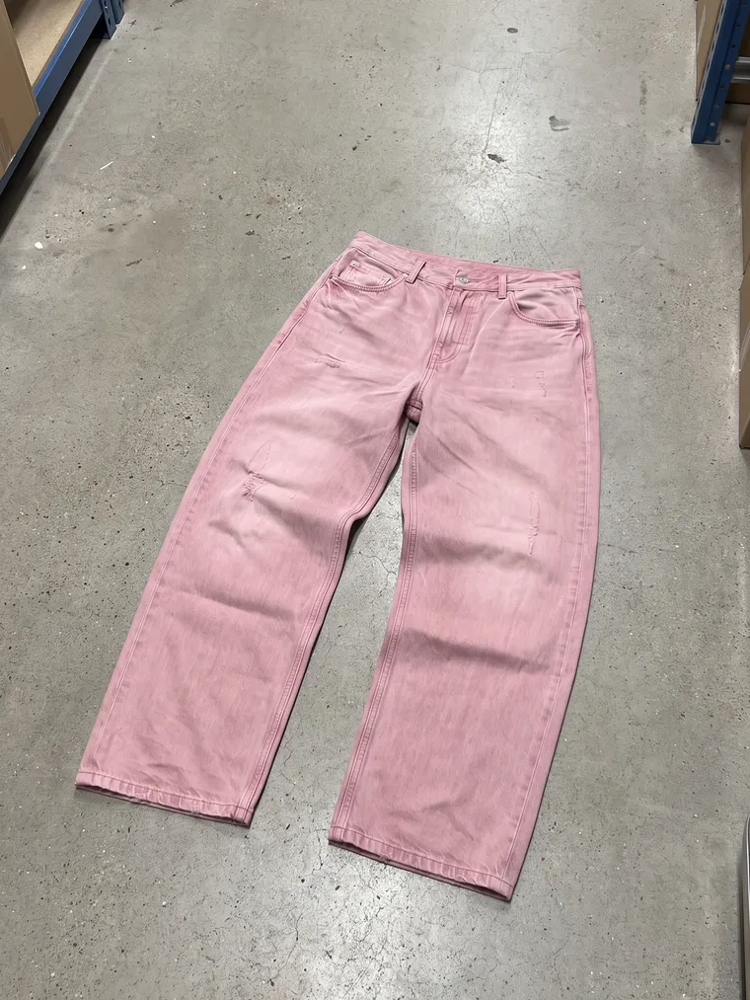
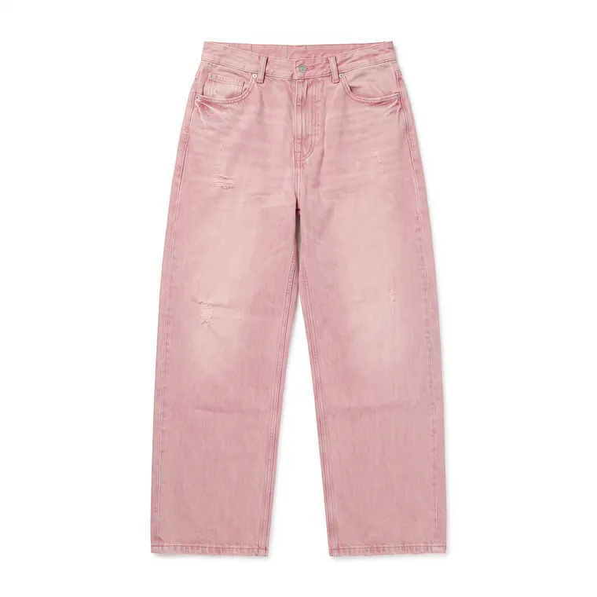
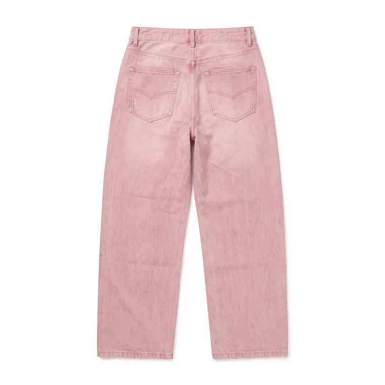
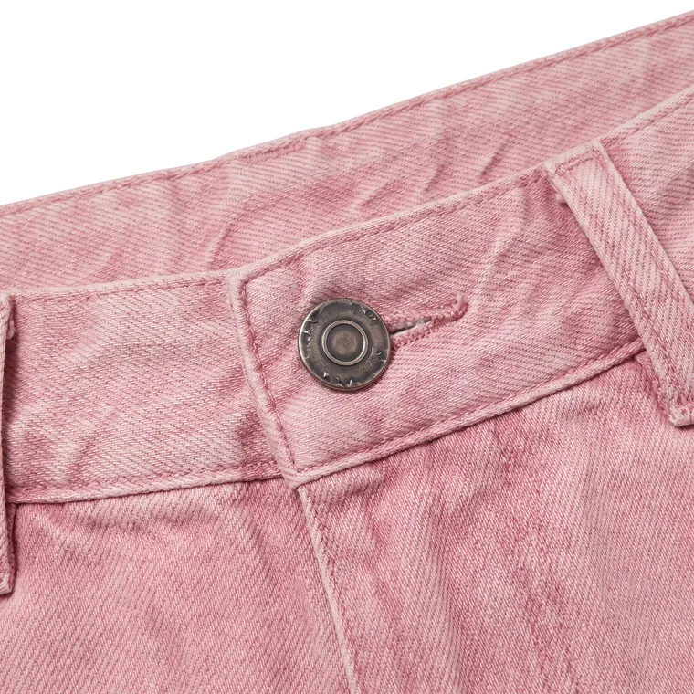
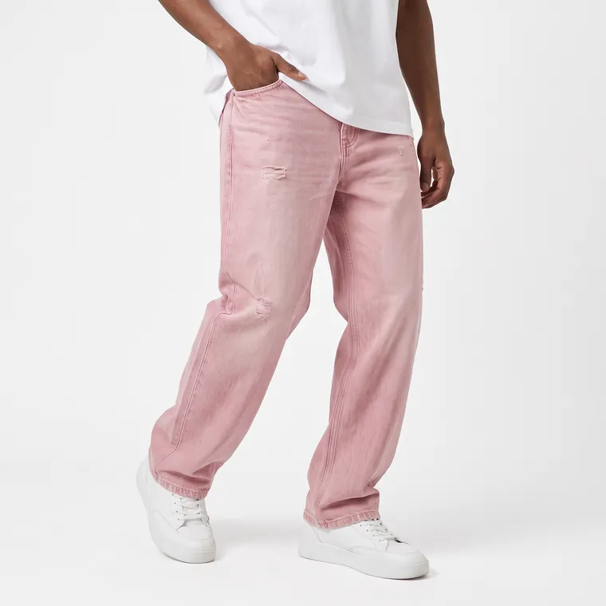

Zelfde stijl, zelfde beelden, zelfde tekst — drie volstrekt verschillende indelingen. Wat ze alle drie oplossen: de ingestuurde klantfoto is niet langer een postzegel naast een groot resultaat, en je ziet in één blik hoeveel beelden je krijgt. Kijk op je telefoon ook even mee; ze zijn alle drie op 390 pixels nagekeken.
Nu: klantfoto ≈ 80 px naast een beeld van ≈ 700 px, en drie lege vakken met alleen een woord erin
De dienst is een transformatie, dus staan de twee kanten ervan even groot naast elkaar — dat is de enige indeling waarin je ze echt kunt vergelijken. De overige geleverde beelden staan als strook eronder, want die zijn het bewijs van het aantal en niet van de verandering.
Classic
Schoon. Consistent. Altijd hetzelfde.





Alle vier de geleverde beelden als gelijke tegels, als een contactvel: dit is letterlijk wat er in je map komt. De ingestuurde foto staat er als eerste tegel voor, iets smaller en met een stippellijn — hij hoort erbij en hij is iets anders. Dit is de rustigste van de drie en de makkelijkste om vol te houden als er ooit een vijfde beeld bij komt.
Classic
Schoon. Consistent. Altijd hetzelfde.
Eén beeld groot, de andere drie eronderuit als een stapel afdrukken, en de telefoonfoto als polaroid in de hoek geklemd. Dit is de enige van de drie waar de STIJL het onderwerp is en niet de telling — en dus de enige die zich laat lezen als mode in plaats van als dienst. Prijs: hij is het minst rustig en het lastigst consistent te houden over zeven looks.
Classic
Schoon. Consistent. Altijd hetzelfde.